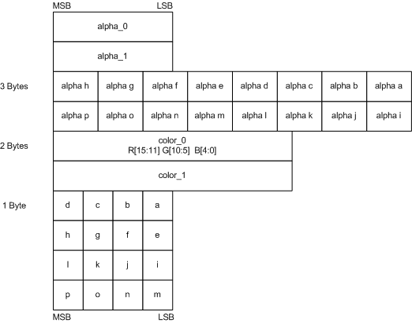
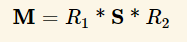

NormalMap
inline void ExtractTBN(in half3 normalOS, in float4 tangent, inout half3 T, inout half3 B, inout half3 N)
{
N = TransformObjectToWorldNormal(normalOS);
T = TransformObjectToWorldDir(tangent.xyz);
B = cross(N, T) * tangent.w * unity_WorldTransformParams.w;
}
inline half3 CombineTBN(in half3 tangentNormal, in half3 T, in half3 B, in half3 N)
{
return mul(tangentNormal, float3x3(normalize(T), normalize(B), normalize(N)));
}
Varyings vert(Attributes IN)
{
ExtractTBN(IN.normalOS, IN.tangent, OUT.T, OUT.B, OUT.N);
}
half4 frag(Varyings IN) : SV_Target
{
half3 normalTex = UnpackNormal(SAMPLE_TEXTURE2D(_NormalTex, sampler_NormalTex, IN.uv));
half3 N = CombineTBN(normalTex, IN.T, IN.B, IN.N);
}
- NormalMap(법선맵)을 쓰는 이유?
- TBN이란?
- world-Normal 구하는 법?
- 노말맵 혹은 법선맵(tangent space)에서 g채널을 뒤집는 이유?
법선맵을 쓰는 이유
- 정점(vertex)을 많이 밖아서 디테일을 표시하면, 실시간으로 정점을 처리하는데 부하가 걸린다(주로 CPU).
- 셰이더 계산시 법선맵에서 가상의 정점을 생성해 빛을 계산하면 디테일을 살릴 수 있다.
Object Space vs Tangent Space
- 리깅을 사용하는 모델의 경우 정점이 몰핑되면서 노말 벡터의 방향이 바뀌게 되는데 이때는 고정된 오브젝트 의 공간좌표계는 의미가 없어짐.
TBN
| TBN | Source | xyz | UV |
|---|---|---|---|
Tangent | TANGENT | x | u |
Binormal | cross(T, N) | y | v |
Normal | NORMAL | z |
N = mul(mat_I_M, normalOS);
T = mul(tangentOS, mat_M);
B = mul(binormalOS, mat_M);
// unity같이 binormalOS를 못어올 경우 N, T를 이용하여 B를 만들 수 있다.
// B = cross(N, T) * tangentOS.w
======== 월드공간 T / B / N 을 구하고 TBN매트릭스(tangent -> world)를 만든다
float3x3 TBN_Tangent2World = float3x3(normalize(Input.T), normalize(Input.B), normalize(Input.N));
| Tx Ty Tz |
| Bx By Bn |
| Nx Ny Nz |
mul(tangentNormal, TBN_Tangent2World); // 왠지 이케 해버리면 앞서 말한 NormalScaleProblem에 걸릴것 같음
======== TBN은 직교행렬, 직교행렬의 역행렬은 전치행렬.
TBN_World2Tangent = transpose(TBN_Tangent2World);
| Tx Bx Nx |
| Ty By Ny |
| Yz Bz Nz |
mul(TBN_World2Tangent, tangentNormal); // 이케하면 되겠지?
======== 뇌피셜
// 위에꺼도 맞긴 맞는데...
// TBN은 직교행렬, 직교행렬의 역행렬은 전치행렬.
// traspose(inverse(M)) == M
mul(tangentNormal, TBN_Tangent2World); // 따라서 이케해도 문제될꺼 없음? 확인해봐야함
normal flatten
// T, B, N
const float3 vec_TBN_UP = float3(0, 0, 1);
normalTS = lerp(normalTS, vec_TBN_UP, _Flatteness);
Block Compression
| DXT5 | BC3 format | (x, y, 0, 1) |
| DXT5nm | DXT5의 R채널값이 A채널로 이동된것 | (1, y, 0, x) |
| BC3 | channel | bit |
|---|---|---|
| x | a0, a1 | 16 |
| alpha indices | 48 | |
| y | color0,1 | 32 |
| color indices | 32 |

| BC5 | channel | bit |
|---|---|---|
| x | r0, r1 | 16 |
| red indices | 48 | |
| y | g0, g1 | 32 |
| green indices | 32 |

UNITY_NO_DXT5nm
DXT5nm이 아닌 경우(UNITY_NO_DXT5nm) 는 다음과 같은 공식을 썼으나,
real3 UnpackNormalRGBNoScale(real4 packedNormal)
{
return packedNormal.rgb * 2.0 - 1.0;
}
아닌경우 UnpackNormalmapRGorAG을 사용 DXT5, DXT5nm을 처리할 수 있게한다.
real3 UnpackNormal(real4 packedNormal)
{
#if defined(UNITY_ASTC_NORMALMAP_ENCODING)
return UnpackNormalAG(packedNormal, 1.0);
#elif defined(UNITY_NO_DXT5nm)
return UnpackNormalRGBNoScale(packedNormal);
#else
// Compiler will optimize the scale away
return UnpackNormalmapRGorAG(packedNormal, 1.0);
#endif
}
// Unpack normal as DXT5nm (1, y, 0, x) or BC5 (x, y, 0, 1)
real3 UnpackNormalmapRGorAG(real4 packedNormal, real scale = 1.0)
{
// Convert to (?, y, 0, x)
packedNormal.a *= packedNormal.r;
return UnpackNormalAG(packedNormal, scale);
}
real3 UnpackNormalAG(real4 packedNormal, real scale = 1.0)
{
real3 normal;
normal.xy = packedNormal.ag * 2.0 - 1.0;
normal.z = max(1.0e-16, sqrt(1.0 - saturate(dot(normal.xy, normal.xy))));
// must scale after reconstruction of normal.z which also
// mirrors UnpackNormalRGB(). This does imply normal is not returned
// as a unit length vector but doesn't need it since it will get normalized after TBN transformation.
// If we ever need to blend contributions with built-in shaders for URP
// then we should consider using UnpackDerivativeNormalAG() instead like
// HDRP does since derivatives do not use renormalization and unlike tangent space
// normals allow you to blend, accumulate and scale contributions correctly.
normal.xy *= scale;
return normal;
}
- xyzw, wy => _g_r => rg => xyn // r이 뒤로 있으므로, 한바퀴 돌려줘야함.
normal.xy = packednormal.wy * 2 - 1;(0 ~ 1 => -1 ~ 1)Z는 쉐이더에서 계산. 단위 벡터의 크기는 1인것을 이용.(sqrt(x^2 + y^2 + z^2) = 1)sqrt(1 - saturate(dot(normal.xy, normal.xy)))
Normal Scale Problem
오브젝트를 스케일시킬때 Normal의 변화의 문제
A라는 도형을 x에 대해서 2만큼 스케일 업하고 싶다고 가정하면,
| 정점 | x 스케일 | 노말 | |
|---|---|---|---|
| A | (1, 1) | 1 | (1, 1) |
| B | (2, 1) | 2 | (2, 1) |
| C | (2, 1) | 2 | (0.5, 1) |

C처럼 x의 스케일 2배 됐다고, 노멀의 x값에 곱하기 2를 해서는 안된다. 역인 나누기 2 를 해야한다.
위치(position)에 대해서는 world-Position = mul(obj-Position, M )이 정상적으로 성립되었다.
하지만, world-Normal = mul( obj-Normal, M ) 처럼 적용했을시 앞+선 B와 같은 문제가 발생한다.
월드행렬(M)식으로 나타내면

우리가 구하고 싶은 행렬을 M-want라 했을시 world-Normal = mul(M-want, obj-Normal)


즉 M-want = traspose(inverse(M)).
DirectX기준 row-major에서의 메트릭스와 벡터의 인자 순서: mul(벡터, 메트릭스) = mul( transpose(메트릭스), 벡터 )
아레 예는 row-major 기준으로 작성.
M = ObjectToWorld
inverse(M) = WorldToObject
M-want = traspose(inverse(M))
world-Normal
= mul(obj-Normal , M-want )
= mul(obj-Normal , traspose(inverse(M)))
= mul(inverse(M) , obj-Normal )
= mul(WorldToObject, obj-Normal )
노말맵 혹은 법선맵(tangent space)에서 g채널을 뒤집는 이유
-
https://victorkarp.wordpress.com/2020/06/26/inverting-a-normal-map-in-blender/
-
단위벡터의 크기가 1이지만, (-1, 0, 0)과 같은게 있으므로, 정규화된 법선벡터의 범위는
-1...1이다. -
바이너리로 저장하기위해 범위를
0...1로 줄이려면 0.5를 곱하고 다시 0.5를 더해주면 된다. -
셰이더에서 저장된 범위
0...1을-1...1로 확장시키려면 2를 곱하고 1을 빼주면-1...1의 범위로 확장된다.
노말맵에서 z값이 강한 경우가 있는데 그럼 이미지가 퍼렇게 보이면서 돌출이 아닌 움푹 패인듯한 느낌이 든다.
- 표면 안쪽으로 향하는(z의 값이 음수인) 경우가 없다.
- 범위는
0 ~ 1 - 바이너리 저장시 범위가
0.5 ~ 1로 변경되면서 0.5부터 값이 시작된다.
- 범위는
- 따라서 맵이 퍼렇게 보이면서, 돌출되는 부분이 이미지상 움푹들어간 모습처럼 보인다.
그러므로, g채널을 뒤집어주면 돌출된 부분을 아티스트가 쉽게 인지할 수 있다.
OpenGLY+ / DirectX Y-

- 유니티는 OpenGL(Y+) 를 써서 보기 비교적 편하다.
- DirectX와 같은 엔진에서는 작업자를 위해 Y+텍스쳐 제작 쉐이더에서 y에
-1을 곱해 뒤집어 주는 코드를 넣어주면 작업자들이 편해진다.
MikkTSpace
- Mikkelsen tangent space normal
| URP | 셰이더 그래프 | URP Lit |
|---|---|---|
| 8.1.0 | 픽셀당 MikkTSpace 노멀 맵 | 정점당 |
| 8.2.0 | 픽셀당 | 픽셀당 |
- 노말맵 베이크
- 방식1. 하이트맵이나 일반 이미지를 이용해서 노멀맵 변환
- 방식2. 로우폴리곤과 하이폴리곤을 가지고 베이크
- 3D프로그램 별 에버레지 버텍스 노말에 동일한 연산을 하지 않음.
- 동일한 연산을 하도록 MikkTSpace로 통일.
- 3D프로그램 별 에버레지 버텍스 노말에 동일한 연산을 하지 않음.